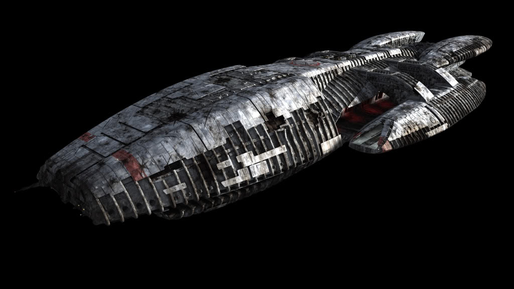

Battlestar Galactica - Battlestar Galactica
The Battlestar Galactica was built during the First Cylon War.
It was built to be off network so that the robotic Cylons were unable to infiltrate and cripple ships. After the Cylons
were able to cripple the Twelve Colony fleets in the Second Cylon War, the Battlestar Galactica was one of the
few surviving ships. It protected the remaining human fleets in its search for Earth.

Facts About the Ship
- Designer - Twelve Colonies
- Notable Crew - Commander Adama, Captain Apollo, Lieutenant Starkbuck, Saul Tigh, Gaius Baltar, Galen Tyrol
- Speed - Capable of light speed and faster-than-light
- Engine - Two engines powered by Tylium, and FTL drive
- Weapons - Laser batteries, EMP, spacecraft and ground vehicles
- Defense - Double metal shield and electronic shield
Return to Home